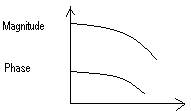

7.10.1: Title of the experiment: Bode plot without compensation, using MATLAB
software
7.10.2: Aim of the experiment: Plotting of Bode plot without compensation for
the given transfer function and verification using theoretical calculations, Using MAT
LAB software.
7.10.3: List of equipments required to conduct the experiment with their
Specification:
Pentium based PC and MATLAB software version 5.1 or 6.1
7.10.4: Experimental setup with naming of all parts: -------Not required------
7.10.5: Theoretical background for the experiment/validation of the experiment:
In Bode method Logarithmic values of magnitude are to be plotted against logarithmic values of frequencies. Such values are called logarithmic plots which allow us to show wide range of variations on a single paper, so in general Bode plot consists of two plots:
7.10.6: Design: -------Not required------
7.10.7: Procedure to carry out the experiment:
The following program is entered
% MATLAB program to plot bode diagram
% Bode diagram
num=[0 0 25];
den =[1 4 25];
% numerator and denominators of the T.F
%bode (num, den) draws the bode diagram
bode (num, den)
title (“Bode diagram”)
7.10.8: Table of observation:----Not required-------
7.10.9: Specimen calculations:
25 1
G (S) = --------------- G(S) = ------------
S2+45+25 1+ 4 S + S2
--- ----
25 25
Comparing with -------------------
S2 + 2 ξ WnS + Wn2
Wn2 = 25 2 ξ Wn = 4
Wn = 5 ξ = 0.4
Magnitude Plot
20 log (1) = 0db
2) Quadratic pole 1- Wc1 = 1 = 1 rad / sec
---- ----
1+ S 1
Quadratic pole contributes –40db/dec individually & will continue till ∞ as there is no other factor
7.10.10: Plotting the graph:

7.10.11: Discussion and conclusion:
From the above experiment it has been observed that MATLAB will take less computational time for the Bode diagram compensation. Also using MATLAB, analysis can be done very easily.